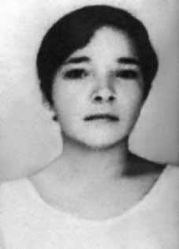

Miriam
Lopes
Verbena
CIRCUNSTÂNCIAS DA MORTE
Miriam Lopes Verbena faleceu em um acidente de automóvel, juntamente com seu esposo, Luis Alberto Andrade de Sá e Benevides, ocorrido na BR-432, entre Cachoeirinha (PE) e São Caetano (PE), na data de 8 de março de 1972. Eles viajavam em um carro emprestado por Ezequias Bezerra da Rocha, amigo de Miriam Lopes Verbena, que seria morto sob tortura e desaparecido pelo DOI do IV Exército, em Recife (PE), logo após a morte do casal.
Essa versão oficial foi reproduzida nos relatórios das Forças Armadas entregues ao então ministro da Justiça, Maurício Corrêa, em dezembro de 1993. Segundo o relatório do Ministério da Aeronáutica Miriam Lopes “morreu em acidente de automóvel dia 09 Mar 72, na Rodovia que liga Caruaru a Lajes (Pernambuco) em companhia de seu marido LUIS ALBERTO ANDRADE DE SA E BENEVIDES”.
As circunstâncias do acidente, no entanto, ainda não foram completamente esclarecidas. Miriam Lopes acompanhava seu marido, Luis Alberto, que almejava viver na clandestinidade, por conta da perseguição a que estava submetido pelos órgãos da repressão. O casal foi ao município de Cachoeirinha (PE), no dia 8 de março de 1972, providenciar documentos na Junta de Serviço Militar (JSM) para Luis Alberto, com o nome falso de “José Carlos Rodrigues”.
Iara Xavier Pereira fez investigações sobre o acidente de Miriam Lopes Verbena, em Pernambuco, para auxiliar o requerimento dos familiares dele na CEMDP, e elaborou, em 17 de março de 1998, relatório circunstanciado, resultado de entrevistas com agentes envolvidos e diligências no local do acidente, no qual levantou vários pontos controversos sobre a versão oficial das circunstâncias da morte do casal.
Entre algumas das contradições apontadas por Iara Xavier Pereira no relatório que produziu para a CEMDP estão:
1. Os órgãos de segurança de Pernambuco, notadamente a Polícia Rodoviária Federal, o DOPS/PE e o DOI do IV Exército, não informaram nos documentos produzidos sobre o acidente quem socorreu e quem transportou o casal do local do acidente para o hospital de Caruaru . O Departamento Nacional de Estradas e Rodagem (DNER) e a Polícia Rodoviária Federal (PRF) não encontraram o laudo do acidente automobilístico sobre o caso.
2. Testemunhas presentes no hospital que atendeu Luis Alberto e Miriam Lopes afirmaram que o local estava repleto de policiais e agentes estatais e que os médicos e profissionais da saúde demonstraram medo e receio de fornecer informações sobre o acidente e a morte das vítimas.
3. No livro de internação do Hospital São Sebastião, em Caruaru, não foram encontrados registros nem dos nomes verdadeiros de Miriam Lopes e de Luis Alberto, tampouco dos nomes falsos utilizados pelo casal à época do acidente.
4. Depoimentos prestados pela funcionária da Junta de Serviço Militar (JSM), Jaidenize Bezerra Vasconcelos, para os familiares de mortos e desaparecidos políticos, apresentaram contradições e alterações de versões. Jaidenize afirmou não ter atendido Luis Alberto na data do acidente, porém, o local e o sentido da pista onde o carro capotou sugere que o casal estava regressando do município sede da JSM, o que poderia indicar uma perseguição policial durante o acidente. Familiares suspeitam, inclusive, que a funcionária possa ter informado autoridades dos órgãos de segurança sobre a presença do casal na JSM.
A certidão de óbito de Miriam Lopes Verbena foi feita sob o nome de “Miriam Lopes Rodrigues”. O auto de exame cadavérico, elaborado também essa identidade da vítima, consta no Inquérito policial produzido à época do acidente.
No dia seguinte ao acidente, 9 de março de 1972, Maria Adozinda, irmã de Miriam Lopes, foi sequestrada em sua casa. Aloysio da Costa Gonçalves, esposo de Maria Adozinda, recebeu a informação de que ela havia sido levada para o DOI do IV Exército. No dia 13 de março de 1972, Aloysio também foi sequestrado em sua residência e levado para o DOI do IV Exército, onde permaneceu preso por 42 dias.
Dois meses após a morte de Miriam Lopes e de Luis Alberto, o jornal Diário de Pernambuco, em 12 de maio de 1972, noticiou a desarticulação de militantes do PCBR, que atuavam em Recife, presos a partir do acidente que vitimou o casal. Outro elemento relevante que pode auxiliar na elucidação do caso foi a prisão de Ramayana Vaz Vargens e Maria Dalva Leite Castro, no Rio de Janeiro, em sete de março de 1972.
Ramayana fazia o contato entre Luis Alberto e os familiares dele no Rio de Janeiro. A sua prisão um dia antes da morte do casal merece maiores investigações, uma vez que esse fato coincide com a queda de vários militantes do PCBR no Nordeste, sobretudo, em Pernambuco. Em depoimento prestado à CEMDP, no dia 07 de março de 1998, Paulo José Montezuma de Andrade afirmou que conhecia Miriam Lopes e Luis Alberto e sustentou que eles estavam sendo seguidos e monitorados pelos órgãos de segurança antes mesmo do acidente.
Há duas outras possíveis versões para a morte do casal no acidente de automóvel, com envolvimento de agentes do Estado. De acordo com a primeira, teriam sido capturados antes do acidente, que teria sido forjado. Conforme a segunda, o veículo teria sido fechado propositalmente por uma caminhonete do DOI do IV Exército.
A primeira versão tem como referência a declaração de Piragibe Castro Alves para a CEMDP, em 12 de setembro de 1996, quando afirmou ter ouvido de um oficial militar a confirmação do envolvimento de agentes do Estado na captura do casal, que teria ocorrido em momento anterior à morte no suposto acidente automobilístico:
I – Durante a primeira quinzena do mês de março de 1972, hospedou-se na residência oficial do Comandante do Quarto Exército, General Dale Coutinho, pai do economista Vicente de Paulo Dale Coutinho, que era seu colega e acionista na empresa COSEP Consultoria, Estudos e Planejamento S. A.
II – Achando-se na varanda da casa com o referido colega, ouviu de amigo da família Dale Coutinho, alegadamente um oficial de marinha ligado aos serviços de segurança, que estes haviam capturado, em Caruaru ou cercanias, um casal subversivo, que posteriormente veio a falecer em circunstâncias que não revelou, nem o declarante lhe perguntou a respeito, inclusive porque teve problemas políticos durante o regime militar, chegando a ser processado, embora finalmente absolvido.
III – Posteriormente, veio a saber pela imprensa que o cônjuge marido do casal dito subversivo, capturado e falecido, era, na verdade, Luiz Alberto Andrade de Sá e Benevides, seu ex-vizinho no edifício dos militares na Praia Vermelha, Rio de Janeiro, onde residiam suas respectivas famílias. Piragibe, em 15 de março de 1998, esclareceu e aditou a declaração prestada anteriormentexxi . Segundo o declarante, o citado oficial da Marinha, que teria assumido a captura do casal, estava acompanhado por um senhor, que depois descobriu tratar-se do Chefe do DOI-CODI do
IV – Exército, o coronel do Exército Confúcio Danton de Paula Avelino, que teria dito na ocasião: “é verdade, nós acabamos com eles”. Reynaldo Benevides, irmão de Luis Alberto, em conversa casual com Piragibe, identificou Confúcio como o chefe do DOI-CODI do IV Exército, com quem tratou pessoalmente em Recife da liberação do corpo de seu irmão, na semana seguinte à sua morte, para conduzi-lo ao Rio de Janeiro, o que não foi autorizado.
De fato, Confúcio Danton de Paula Avelino atuava em função de comando no DOI do IV Exército no período das mortes de Luis Alberto, de Miriam Lopes e de Ezequias Bezerra da Rocha. Ele foi nomeado, em 17 de setembro de 1971, agente diretor do Quartel General do IV Exército (QG/IV Ex), pelo general Vicente de Paulo Dale Coutinho, e exerceu, ao longo de 1972, de forma alternada, por alguns períodos, a função de chefe do Estado-Maior do IV Exército.
Auxiliar direto do general Vicente de Paulo Dale Coutinho, Confúcio foi elogiado por ele com destaque para sua atuação à frente da repressão no Nordeste, na data de 4 de janeiro de 1973, em Boletim informativo do Exército, na ocasião em que foi promovido ao posto de general, nos seguintes termos: Chefe do EM da 2º RM, no período mais aguado da subversão no Brasil que escolheu o Estado de São Paulo como principal teatro para suas operações.
[…] Perdi-o, justamente nesse período difícil, quando foi escolhido pelo próprio Presidente da República para comandar a Polícia Militar de São Paulo, onde prestou reais serviços a esse Estado da Federação naquela luta contra a subversão. Durante meu comando no IV Exercito, mais uma vez, contei com a prestimosa colaboração deste brilhante oficial, nas funções de Subchefe do meu Estado-Maior, constituindo no elemento chave de toda a luta contra o terrorismo no Nordeste, nesse período, e que agora, vem alcançar as estrelas do generalato na Chefia de meu Gabinete no meu DMB (Departamento de Material Bélico).
A segunda versão decorre da declaração de Aloísio da Costa Gonçalves, cunhado de Miriam Lopes Verbena, preso à época da morte do casal, após a detenção de sua esposa, que em depoimento gravado pela CNV e obtido pela CEMVDHC, em Recife, no dia 14 de outubro de 2014, forneceu elementos para esclarecer o acidente de Miriam Lopes e de Luis Alberto. De acordo com Aloísio Gonçalves da Costa, Álvaro da Costa Lima, delegado da repressão em Pernambuco, que foi também secretário de segurança no Estado, declarou a Valdir Cavalcante, médico e cunhado do depoente, que uma caminhonete do DOI teria fechado intencionalmente o carro conduzido por Miriam Lopes Verbena e Luis Alberto de Sá e Benevides, e provocado o acidente.
O depoente alegou ainda ter providenciado o enterro do casal em Caruaru e disse que quando examinou o corpo de Miriam, no Hospital, imediatamente após o acidente, não viu perfuração de tiros. O carro também não apresentava marcas de que tivesse sido alvejado.
No Requerimento apresentado à CEMDP, em 19 de março de 1996, os familiares informaram que os restos mortais de Miriam Lopes e de Luis Alberto estão desaparecidos desde 1977, quando tentaram novamente a exumação dos corpos e tiveram ciência desse fato. Além dos restos mortais de Luis Alberto e de Miriam Lopes, os documentos que poderiam auxiliar a localização dos corpos também não foram encontrados. De acordo com o requerimento: sepultados em 08 de março de 1972, no Cemitério Municipal Dom Bosco, em Caruaru, Pernambuco, às pressas, sob supervisão policial e em cova rasa nas sepulturas nº 1538 e nº 1139, respectivamente, conforme consta dos atestados de óbito anexados, mas cujos restos mortais sumiram em traslados feitos à revelia dos familiares, tendo inclusive se extraviado igualmente os livros de registro do cemitério da época em que ocorreram tais fatos.
O requerimento encaminhado à CEMDP para o reconhecimento de Miriam Lopes Verbena como morta política foi indeferido por unanimidade, uma vez que não teria sido comprovado, até aquele momento, o envolvimento de agentes do estado na morte da militante do PCBR. Em seu parecer, o relator Belisário dos Santos Junior pediu providências para a localização dos restos mortais de Luis Alberto e de Miriam Lopes Verbena e a punição dos responsáveis, caso esse desaparecimento tivesse sido doloso.
O traslado dos corpos, feito sem o conhecimento dos familiares, e a ausência de informações sobre o paradeiro dos restos mortais inviabilizou uma análise pericial por parte da CNV, para examinar a compatibilidade das lesões descritas no óbito e a versão oficial de acidente. A Comissão Estadual da Memória e Verdade Dom Helder Câmara (CEMVDHC), de Pernambuco, deve obter novo depoimento de Aloísio da Costa Gonçalves e também efetuar a oitiva de Ramayana Vaz Vargens, que foi preso no Rio de Janeiro no período da morte de Luís Alberto e de Miriam Lopes, com o fim de elucidar os pontos controversos da morte do casal.
Miriam Lopes Verbena died in a car accident, together with her husband, Luis Alberto Andrade de Sá e Benevides, which occurred on BR-432, between Cachoeirinha (PE) and São Caetano (PE), on March 8, 1972. They were traveling in a car borrowed by Ezequias Bezerra da Rocha, a friend of Miriam Lopes Verbena, who would be killed under torture and disappeared by the DOI of the IV Army, in Recife (PE), shortly after the couple's death.
This official version was reproduced in the Armed Forces reports delivered to the then Minister of Justice, Maurício Corrêa, in December 1993. According to the report from the Ministry of Aeronautics Miriam Lopes “died in a car accident on 09 Mar 72, on the highway connecting Caruaru to Lajes (Pernambuco) in the company of her husband LUIS ALBERTO ANDRADE DE SA E BENEVIDES”.
The circumstances of the accident, however, have not yet been completely clarified. Miriam Lopes accompanied her husband, Luis Alberto, who wanted to live in hiding, due to the persecution to which he was subjected by the repression agencies. The couple went to the municipality of Cachoeirinha (PE), on March 8, 1972, to provide documents at the Military Service Board (JSM) for Luis Alberto, under the false name of “José Carlos Rodrigues”.
Iara Xavier Pereira carried out investigations into the accident of Miriam Lopes Verbena, in Pernambuco, to assist his family's request to the CEMDP, and prepared, on March 17, 1998, a detailed report, the result of interviews with agents involved and investigations at the scene of the accident, in which he raised several controversial points about the official version of the circumstances of the couple's death.
Among some of the contradictions pointed out by Iara Xavier Pereira in the report he produced for CEMDP are:
1. The security bodies of Pernambuco, notably the Federal Highway Police, the DOPS/PE and the DOI of the IV Army, did not inform in the documents produced about the accident who helped and who transported the couple from the accident site to the Caruaru hospital. The National Department of Roads and Highways (DNER) and the Federal Highway Police (PRF) did not find the car accident report on the case.
2. Witnesses present at the hospital that treated Luis Alberto and Miriam Lopes stated that the place was full of police and state agents and that doctors and health professionals showed fear and were afraid to provide information about the accident and the deaths of the victims.
3. In the admission book at Hospital São Sebastião, in Caruaru, no records were found of either the real names of Miriam Lopes and Luis Alberto, or the false names used by the couple at the time of the accident.
4. Statements given by the Military Service Board (JSM) employee, Jaidenize Bezerra Vasconcelos, to the families of the dead and missing politicians, presented contradictions and changes in versions. Jaidenize stated that he did not assist Luis Alberto on the date of the accident, however, the location and direction of the road where the car overturned suggests that the couple was returning from the JSM headquarters municipality, which could indicate a police chase during the accident. Family members even suspect that the employee may have informed security authorities about the couple's presence at JSM.
Miriam Lopes Verbena's death certificate was issued under the name “Miriam Lopes Rodrigues”. The cadaveric examination report, which also provided the identity of the victim, appears in the police investigation carried out at the time of the accident.
The day after the accident, March 9, 1972, Maria Adozinda, Miriam Lopes' sister, was kidnapped from her home. Aloysio da Costa Gonçalves, husband of Maria Adozinda, received information that she had been taken to the DOI of the IV Army. On March 13, 1972, Aloysio was also kidnapped from his home and taken to the DOI of the IV Army, where he remained imprisoned for 42 days.
Two months after the deaths of Miriam Lopes and Luis Alberto, the newspaper Diário de Pernambuco, on May 12, 1972, reported the dismantling of PCBR activists, who worked in Recife, arrested following the accident that killed the couple. Another relevant element that could help in elucidating the case was the arrest of Ramayana Vaz Vargens and Maria Dalva Leite Castro, in Rio de Janeiro, on March 7, 1972.
Ramayana made contact between Luis Alberto and his family in Rio de Janeiro. His arrest the day before the couple's death deserves further investigation, as this fact coincides with the fall of several PCBR militants in the Northeast, especially in Pernambuco. In a statement given to CEMDP, on March 7, 1998, Paulo José Montezuma de Andrade stated that he knew Miriam Lopes and Luis Alberto and maintained that they were being followed and monitored by security agencies even before the accident.
There are two other possible versions of the couple's death in the car accident, with the involvement of State agents. According to the first, they were captured before the accident, which was faked. According to the second, the vehicle had been closed on purpose by a DOI truck from the Fourth Army.
The first version has as a reference the statement by Piragibe Castro Alves to CEMDP, on September 12, 1996, when he stated that he had heard from a military officer the confirmation of the involvement of State agents in the capture of the couple, which would have occurred at a time before their death in the alleged car accident:
I – During the first fortnight of March 1972, he stayed at the official residence of the Commander of the Fourth Army, General Dale Coutinho, father of the economist Vicente de Paulo Dale Coutinho, who was his colleague and shareholder in the company COSEP Consultoria, Estudos e Defesa S. A.
II – While on the balcony of the house with the aforementioned colleague, he heard from family friend Dale Coutinho, allegedly a naval officer linked to the security services, that they had captured, in Caruaru or nearby, a subversive couple, who later died in circumstances that he did not reveal, nor did the declarant ask him about it, including because he had political problems during the military regime, and was eventually prosecuted, although finally acquitted.
III – Later, he learned from the press that the spouse of the so-called subversive couple, captured and deceased, was, in fact, Luiz Alberto Andrade de Sá e Benevides, his former neighbor in the military building in Praia Vermelha, Rio de Janeiro, where their respective families lived. Piragibe, on March 15, 1998, clarified and added the statement previously madexxi. According to the declarant, the aforementioned Navy officer, who had assumed the capture of the couple, was accompanied by a man, who later discovered that he was the Chief of DOI-CODI of the
IV – Army, Army Colonel Confúcio Danton de Paula Avelino, who reportedly said at the time: “it’s true, we finished them off”. Reynaldo Benevides, Luis Alberto's brother, in a casual conversation with Piragibe, identified Confúcio as the head of DOI-CODI of the IV Army, with whom he personally dealt with in Recife about the release of his brother's body, the week following his death, to take him to Rio de Janeiro, which was not authorized.
In fact, Confúcio Danton de Paula Avelino served in a command role in the DOI of the IV Army during the period of the deaths of Luis Alberto, Miriam Lopes and Ezequias Bezerra da Rocha. He was appointed, on September 17, 1971, director agent of the General Headquarters of the IV Army (QG/IV Ex), by General Vicente de Paulo Dale Coutinho, and held, throughout 1972, alternately, for some periods, the role of chief of staff of the IV Army.
A direct assistant to General Vicente de Paulo Dale Coutinho, Confúcio was praised by him, with emphasis on his performance at the forefront of repression in the Northeast, on January 4, 1973, in the Army Newsletter, at the time he was promoted to the rank of general, in the following terms: Head of the EM of the 2nd RM, in the most intense period of subversion in Brazil, which chose the State of São Paulo as the main theater for its operations.
[…] I lost him, precisely during this difficult period, when he was chosen by the President of the Republic himself to command the Military Police of São Paulo, where he provided real services to that State of the Federation in the fight against subversion. During my command of the IV Army, once again, I counted on the helpful collaboration of this brilliant officer, in his role as Deputy Chief of my General Staff, constituting the key element in the entire fight against terrorism in the Northeast, during this period, and who now reaches the stars of generalship as Head of my Office in my DMB (Department of War Materiel).
The second version comes from the statement of Aloísio da Costa Gonçalves, brother-in-law of Miriam Lopes Verbena, arrested at the time of the couple's death, after the arrest of his wife, who in a statement recorded by the CNV and obtained by CEMVDHC, in Recife, on October 14, 2014, provided elements to clarify the accident of Miriam Lopes and Luis Alberto. According to Aloísio Gonçalves da Costa, Álvaro da Costa Lima, delegate of repression in Pernambuco, who was also secretary of security in the State, told Valdir Cavalcante, doctor and brother-in-law of the deponent, that a DOI truck had intentionally closed the car driven by Miriam Lopes Verbena and Luis Alberto de Sá e Benevides, and caused the accident.
The deponent also claimed to have arranged for the couple's burial in Caruaru and said that when he examined Miriam's body, at the Hospital, immediately after the accident, he did not see gunshot wounds. The car also showed no signs of having been shot at.
In the Request presented to CEMDP, on March 19, 1996, the family members informed that the mortal remains of Miriam Lopes and Luis Alberto had been missing since 1977, when they tried again to exhume the bodies and became aware of this fact. In addition to the remains of Luis Alberto and Miriam Lopes, documents that could help locate the bodies were also not found. According to the requirement: buried on March 8, 1972, in the Dom Bosco Municipal Cemetery, in Caruaru, Pernambuco, hurriedly, under police supervision and in a shallow grave in graves nº 1538 and nº 1139, respectively, as stated in the attached death certificates, but whose mortal remains disappeared in transfers carried out without family members, and the cemetery's registration books from the time were also lost. such events occurred.
The request sent to CEMDP for the recognition of Miriam Lopes Verbena as a dead politician was unanimously rejected, as the involvement of state agents in the death of the PCBR activist had not been proven until that moment. In his opinion, rapporteur Belisário dos Santos Junior called for measures to locate the remains of Luis Alberto and Miriam Lopes Verbena and punish those responsible, if this disappearance had been intentional.
The transfer of the bodies, carried out without the knowledge of the family members, and the lack of information about the whereabouts of the remains made it impossible for the CNV to carry out an expert analysis to examine the compatibility of the injuries described in the death and the official version of the accident. The Dom Helder Câmara State Memory and Truth Commission (CEMVDHC), from Pernambuco, must obtain a new statement from Aloísio da Costa Gonçalves and also carry out a hearing from Ramayana Vaz Vargens, who was arrested in Rio de Janeiro during the period of the deaths of Luís Alberto and Miriam Lopes, in order to elucidate the controversial points of the couple's death.
Miriam Lopes Verbena murió en un accidente automovilístico, junto con su marido, Luis Alberto Andrade de Sá e Benevides, ocurrido en la BR-432, entre Cachoeirinha (PE) y São Caetano (PE), el 8 de marzo de 1972. Viajaban en un automóvil prestado por Ezequias Bezerra da Rocha, amigo de Miriam Lopes Verbena, quien sería asesinado bajo tortura y desaparecido por el DOI del IV. Ejército, en Recife (PE), poco después de la muerte de la pareja.
Esta versión oficial fue reproducida en los informes de las Fuerzas Armadas entregados al entonces Ministro de Justicia, Maurício Corrêa, en diciembre de 1993. Según el informe del Ministerio de Aeronáutica, Miriam Lopes “murió en un accidente automovilístico el día 09 de marzo de 1972, en la carretera que conecta Caruaru con Lajes (Pernambuco), en compañía de su marido LUIS ALBERTO ANDRADE DE SA E BENEVIDES”.
Sin embargo, las circunstancias del accidente aún no se han aclarado del todo. Miriam Lopes acompañó a su esposo, Luis Alberto, quien quería vivir escondido, debido a la persecución a la que era sometido por parte de los organismos de represión. El matrimonio se dirigió al municipio de Cachoeirinha (PE), el 8 de marzo de 1972, para presentar documentos en la Junta del Servicio Militar (JSM) de Luis Alberto, bajo el nombre falso de “José Carlos Rodrigues”.
Iara Xavier Pereira realizó investigaciones sobre el accidente de Miriam Lopes Verbena, en Pernambuco, para atender el pedido de su familia al CEMDP, y elaboró, el 17 de marzo de 1998, un informe detallado, resultado de entrevistas con los agentes involucrados y de investigaciones en el lugar del accidente, en el que planteó varios puntos controvertidos sobre la versión oficial de las circunstancias de la muerte de la pareja.
Entre algunas de las contradicciones señaladas por Iara Xavier Pereira en el informe que realizó para el CEMDP se encuentran:
1. Los órganos de seguridad de Pernambuco, en particular la Policía Federal de Carreteras, el DOPS/PE y el DOI del IV Ejército, no informaron en los documentos aportados sobre el accidente quién ayudó y quién transportó a la pareja desde el lugar del accidente hasta el hospital de Caruaru. El Departamento Nacional de Caminos y Carreteras (DRNA) y la Policía Federal de Caminos (PRF) no encontraron el parte del accidente automovilístico sobre el caso.
2. Testigos presentes en el hospital que atendió a Luis Alberto y Miriam Lopes manifestaron que el lugar estaba lleno de policías y agentes estatales y que médicos y profesionales de la salud mostraron temor y temor a brindar información sobre el accidente y la muerte de las víctimas.
3. En el libro de ingresos del Hospital São Sebastião, en Caruaru, no se encontraron registros ni de los nombres reales de Miriam Lopes y Luis Alberto, ni de los nombres falsos utilizados por la pareja en el momento del accidente.
4. Las declaraciones brindadas por la empleada de la Junta del Servicio Militar (JSM), Jaidenize Bezerra Vasconcelos, a los familiares de los políticos muertos y desaparecidos, presentaron contradicciones y cambios de versiones. Jaidenize afirmó que no asistió a Luis Alberto en la fecha del accidente, sin embargo, la ubicación y dirección de la vía donde volcó el auto sugiere que la pareja regresaba de la municipalidad sede de JSM, lo que podría indicar una persecución policial durante el accidente. Los familiares incluso sospechan que el empleado pudo haber informado a las autoridades de seguridad sobre la presencia de la pareja en JSM.
El certificado de defunción de Miriam Lopes Verbena fue emitido bajo el nombre de “Miriam Lopes Rodrigues”. El informe del examen cadavérico, que también proporcionó la identidad de la víctima, consta en la investigación policial realizada en el momento del accidente.
Al día siguiente del accidente, el 9 de marzo de 1972, María Adozinda, hermana de Miriam Lopes, fue secuestrada en su casa. Aloysio da Costa Gonçalves, esposo de Maria Adozinda, recibió información de que ésta había sido llevada al DOI del IV Ejército. El 13 de marzo de 1972, Aloysio también fue secuestrado en su domicilio y llevado al DOI del IV Ejército, donde permaneció recluido durante 42 días.
Dos meses después de la muerte de Miriam Lopes y Luis Alberto, el diario Diário de Pernambuco, del 12 de mayo de 1972, informó del desmantelamiento de activistas del PCBR, que trabajaban en Recife, detenidos tras el accidente que mató a la pareja. Otro elemento relevante que pudo ayudar al esclarecimiento del caso fue la detención de Ramayana Vaz Vargens y María Dalva Leite Castro, en Río de Janeiro, el 7 de marzo de 1972.
Ramayana estableció contacto entre Luis Alberto y su familia en Río de Janeiro. Su arresto el día antes de la muerte de la pareja merece una mayor investigación, ya que este hecho coincide con la caída de varios militantes del PCBR en el Nordeste, especialmente en Pernambuco. En declaración prestada al CEMDP, el 7 de marzo de 1998, Paulo José Montezuma de Andrade afirmó conocer a Miriam Lopes y Luis Alberto y sostuvo que estaban siendo seguidos y monitoreados por organismos de seguridad incluso antes del accidente.
Existen otras dos posibles versiones sobre la muerte de la pareja en el accidente automovilístico, con la participación de agentes del Estado. Según el primero, fueron capturados antes del accidente, el cual fue simulado. Según el segundo, el vehículo había sido cerrado intencionalmente por un camión DOI del Cuarto Ejército.
La primera versión tiene como referencia la declaración de Piragibe Castro Alves al CEMDP, el 12 de septiembre de 1996, cuando afirmó haber escuchado de un militar la confirmación de la participación de agentes estatales en la captura de la pareja, lo que habría ocurrido en un momento anterior a su muerte en el supuesto accidente automovilístico:
I – Durante la primera quincena de marzo de 1972 se hospedó en la residencia oficial del Comandante del Cuarto Ejército, General Dale Coutinho, padre del economista Vicente de Paulo Dale Coutinho, quien era su colega y accionista de la empresa COSEP Consultoria, Estudos e Defesa S. A.
II – Estando en el balcón de la casa con el citado colega, escuchó de boca de un amigo de la familia Dale Coutinho, supuestamente oficial naval vinculado a los servicios de seguridad, que habían capturado, en Caruaru o alrededores, a una pareja subversiva, que luego murió en circunstancias que él no reveló, ni el declarante le preguntó al respecto, incluso porque tuvo problemas políticos durante el régimen militar, y finalmente fue procesado, aunque finalmente absuelto.
III – Posteriormente supo por la prensa que el cónyuge de la llamada pareja subversiva, capturado y fallecido, era, en realidad, Luiz Alberto Andrade de Sá e Benevides, su ex vecino en el edificio militar de Praia Vermelha, Río de Janeiro, donde vivían sus respectivas familias. Piragibe, el 15 de marzo de 1998, aclaró y añadió lo expresado anteriormentexxi. Según el declarante, el citado oficial de la Armada, que había asumido la captura de la pareja, iba acompañado de un hombre, quien posteriormente descubrió que se trataba del Jefe del DOI-CODI de la
IV – Ejército, Coronel del Ejército Confúcio Danton de Paula Avelino, quien habría dicho en ese momento: “es verdad, los rematamos”. Reynaldo Benevides, hermano de Luis Alberto, en una conversación casual con Piragibe, identificó a Confúcio como el jefe del DOI-CODI del IV Ejército, con quien trató personalmente en Recife la liberación del cuerpo de su hermano, la semana siguiente a su muerte, para llevarlo a Río de Janeiro, lo que no estaba autorizado.
De hecho, Confúcio Danton de Paula Avelino desempeñó un rol de mando en el DOI del IV Ejército durante el período de las muertes de Luis Alberto, Miriam Lopes y Ezequias Bezerra da Rocha. Fue nombrado, el 17 de septiembre de 1971, agente director del Cuartel General del IV Ejército (QG/IV Ex), por el General Vicente de Paulo Dale Coutinho, y ejerció, a lo largo de 1972, alternativamente, por algunos períodos, el cargo de jefe de Estado Mayor del IV Ejército.
Asistente directo del general Vicente de Paulo Dale Coutinho, Confúcio fue elogiado por éste, con énfasis en su actuación al frente de la represión en el Nordeste, el 4 de enero de 1973, en el Boletín del Ejército, en el momento de su ascenso al grado de general, en los siguientes términos: Jefe del EM de la 2.ª RM, en el período más intenso de la subversión en Brasil, que eligió el Estado de São Paulo como principal teatro de operaciones.
[…] Lo perdí, precisamente durante este difícil período, cuando fue elegido por el propio Presidente de la República para comandar la Policía Militar de São Paulo, donde prestó verdaderos servicios a ese Estado de la Federación en la lucha contra la subversión. Durante mi mando del IV Ejército, una vez más conté con la servicial colaboración de este brillante oficial, en su calidad de Subjefe de mi Estado Mayor, constituyendo el elemento clave de toda la lucha contra el terrorismo en el Nordeste, durante este período, y que ahora alcanza las estrellas del generalato como Jefe de mi Oficina en mi DMB (Departamento de Material de Guerra).
La segunda versión surge de la declaración de Aloísio da Costa Gonçalves, cuñado de Miriam Lopes Verbena, detenido en el momento de la muerte de la pareja, después de la detención de su esposa, quien en declaración registrada por la CNV y obtenida por el CEMVDHC, en Recife, el 14 de octubre de 2014, aportó elementos para esclarecer el accidente de Miriam Lopes y Luis Alberto. Según Aloísio Gonçalves da Costa, Álvaro da Costa Lima, delegado de la represión en Pernambuco, quien también era secretario de seguridad del Estado, dijo a Valdir Cavalcante, médico y cuñado del declarante, que un camión del DOI había cerrado intencionalmente el automóvil conducido por Miriam Lopes Verbena y Luis Alberto de Sá e Benevides, y provocó el accidente.
El declarante también afirmó haber dispuesto el entierro de la pareja en Caruaru y dijo que cuando examinó el cuerpo de Miriam, en el Hospital, inmediatamente después del accidente, no vio heridas de bala. El coche tampoco presentaba señales de haber recibido disparos.
En la Solicitud presentada al CEMDP, el 19 de marzo de 1996, los familiares informaron que los restos mortales de Miriam Lopes y Luis Alberto se encontraban desaparecidos desde 1977, cuando intentaron nuevamente exhumar los cuerpos y tomaron conocimiento de este hecho. Además de los restos de Luis Alberto y Miriam Lopes, tampoco se encontraron documentos que pudieran ayudar a localizar los cuerpos. Según el requisito: enterrado el 8 de marzo de 1972, en el Cementerio Municipal Dom Bosco, en Caruaru, Pernambuco, apresuradamente, bajo vigilancia policial y en fosa superficial en las fosas nº 1538 y nº 1139, respectivamente, según consta en los certificados de defunción adjuntos, pero cuyos restos mortales desaparecieron en traslados realizados sin familiares, y también se perdieron los libros de registro del cementerio de la época. tales acontecimientos ocurrieron.
La solicitud enviada al CEMDP para el reconocimiento de Miriam Lopes Verbena como política muerta fue rechazada por unanimidad, ya que hasta ese momento no se había demostrado la participación de agentes estatales en la muerte de la activista del PCBR. En su opinión, el relator Belisário dos Santos Junior pidió medidas para localizar los restos de Luis Alberto y Miriam Lopes Verbena y sancionar a los responsables, si esta desaparición hubiera sido intencional.
El traslado de los cadáveres, realizado sin el conocimiento de los familiares, y la falta de información sobre el paradero de los restos imposibilitaron a la CNV realizar un peritaje para examinar la compatibilidad de las lesiones descritas en la muerte y la versión oficial del accidente. La Comisión Estatal de Memoria y Verdad (CEMVDHC) Dom Helder Câmara, de Pernambuco, debe obtener una nueva declaración de Aloísio da Costa Gonçalves y también realizar una audiencia a Ramayana Vaz Vargens, detenido en Río de Janeiro durante el período de la muerte de Luís Alberto y Miriam Lopes, para dilucidar los puntos controvertidos de la muerte de la pareja.